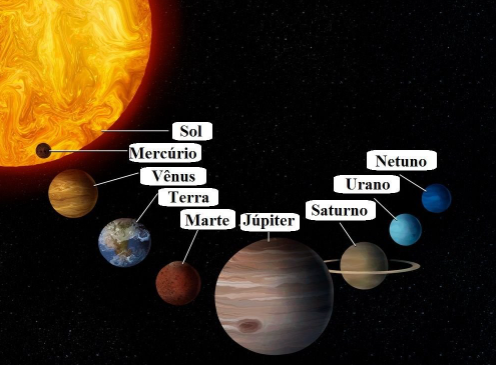
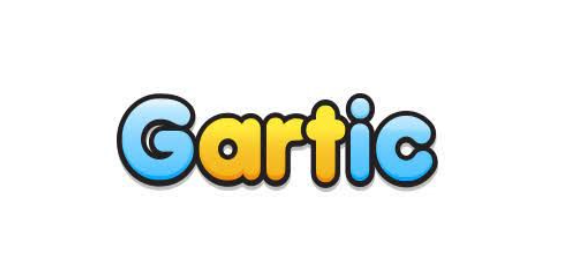

FONTE: Musica
O Sistema Solar corresponde a um conjunto formado pelo Sol, asteroides, satélites, meteoros, cometas e oito planetas com formas esféricas os quais descrevem órbitas elípticas.
Mercúrio, Vênus, Terra, Marte, Júpiter, Saturno, Urano, Netuno são os planetas que compõem o sistema solar.
_________________________ FONTE: Toda Materia
______O jogador controla o principal protagonista da série, Mario. O objetivo do jogo é percorrer o Reino do Cogumelo (Mushroom Kingdom), sobreviver às forças do vilão principal, Bowser, e salvar a Princesa Peach (na época conhecida por seu nome americano, Princess Toadstool) e seu reino do domínio dos Koopa Troopas.
_____________________________________
O jogo é semelhante a um jogo de forca, onde o usuário precisa adivinhar uma palavra em até seis tentativas, mas precisa arriscar termos ao invés de adivinhar qualquer letra, podendo ser acessado diretamente pelo navegador. Uma nova palavra é escolhida a cada 24 horas e é a mesma para todos os usuários que jogam naquele dia.
No Dueto e no Quarteto, o jogo funciona quase de forma parecida. O jogador ainda terá que caçar-palavras, a diferença é que o jogador terá que adivinhar mais palavras de forma consecutiva com mais chances. A dificuldade aumenta, porque será apenas uma palavra por tentativa, portanto o jogador terá que descobrir duas (no caso do dueto) e quatro (no caso do quarteto) com somente um palpite por rodada.

FONTE: https://psverso.com.br/guias/tudo-sobre-termo/
A ditadura militar foi um regime autoritário, que teve início após um golpe militar no governo de João Goulart. O golpe aconteceu no dia 31 de março de 1964. Este regime deprimiu vários artistas e a população local, pois se falassem algo ruim sobre o governo eles eram punidos, com coisas pesadas, as vezes até a morte.
Vários artistas sumiram e alguns pararam de produzir arte por causa do regime. Um exemplo de artista que foi exilado durante a ditadura foi Caetano Veloso, pois foi exilado por causa que foi uma das maiores vozes contra o autoritarismo da ditadura. Foi preso em 1969 e exilado para Londres, no Reino Unido Uma das suas principais canções que ele fez na ditadura militar foi Alegria-Alegria.
Fonte: Toda Matéria.
É um jogo de adivinhação de desenho online e 100% gratuito. O objetivo do jogo é tentar adivinhar o que os outros jogadores estão desenhando. Em casa rodada, uma pessoa diferente fica responsável por criar o desenho que várias pessoas vão tentar adivinhar.
Você pode acessar salas pré-definidas (alimentos, animais, objetos, filme, etc.) ou salas temáticas criados por outros usuários. Vence aquele que atingir a maior quantidade de pontos.
______Este tipo de arte é o conjunto de fontes escolhidas artisticamente, que pode ser complementada com desenhos e outros elementos. Caracteriza-se também pelas frases e mensagens transmitidas, que podem ser engraçados ou reflexivas.
______Fazer lettering tem se tornado uma prática terapêutica muito eficiente para relaxar e descontrair. Também pode ser uma fonte de renda extra, pois alguns artistas estão produzindo e vendendo peças artesanais com esta técnica.
______O Subway Surfers é um jogo gratuito para dispositivos Android, iOS e Windows Phone, em que o jogador controla simpáticos garotos que tiveram a má ideia de pichar o metrô de uma cidade. O principal objetivo é fugir do policial bigodudo e do seu cachorro, que querem puni-lo pela travessura que aprontou.
______Outro objetivo é coletar moedas. Com elas, o usuário pode comprar itens como um imã para atrair mais moedas e até um jetpack, mochila a jato, para deixar a sua aventura mais interessante.


O estilo europeu pode ser prevençal, lembrando Paris e um clima mais romântico, com flores, arabescos e outros itens. Mas o foco do artigo é em uma tendência que tem ganhado destaque, a decoração estilo europeu dos países nórdicos, que traz um tom bem diferente do prevençal para a decoração.
as principais características são: Peças ajustadas, simplificidade, cores neutras, poucas estampas, calça skinny, camisetas com gola V.

______Por mais que muitos pensem, a síndrome de down não é uma doença! A síndrome de down é uma condição genética, que é definida através de um cromossomo 21 extra nas células do corpo.
______O cientista John Langdon Down, foi quem estudou e se aprofundou para descobrir a síndrome de down.A pessoa que possui essa síndrome, tem características físicas diferentes que quem possui a síndrome. Algumas delas: Pescoço curto, Mãos pequenas e dedos curtos, Flacidez muscular, Raiz nasal achatada e Pé plano.
______As suas limitações não os impedem de que eles tenham uma vida digna. Todos nós devemos acabar com esse preconceito da incapacidade das pessoas com síndrome de down. Todos merecem respeito.
______A primeira vez que Minecraft surgiu na internet foi em 2009, como um projeto online do programador sueco Markus ‘’Notch ‘’ Persson – e ficou conhecida como versão ‘’classic’’. Nessa versão, o usuário podia mexer nos blocos, mas ainda não havia os elementos de sobrevivência, que é o que torna a série tão popular.
______Hoje, Minecraft existe, de maneira resumida em duas versões: Java e Bedrock. A Mojang Studios confirmou que a aguardada edição de arqueologia, finalmente será integrada ao Minecraft na atualização 1.20, que está prevista para este ano de 2023.
______O novo sistema trará consigo uma série de funcionalidades e dinâmicas inéditas, que havia sido antecipada há alguns anos, mas que nunca viram a luz do dia. Dentre as novas ‘’skins’’ (personagens) teremos Sunny, Efe, Noor, Makena, Kai, Ari, Zuri que se juntarão aos personagens que já existem por padrão, Alex e Steve.
______Para jogar é preciso explorar seus arredores e coletar materiais para criar armas, armaduras, comida, ferramentas e materiais de construção. Certas regiões, possuem materiais raros, como obsidiana e redstone, mas é preciso ter os equipamentos certos e, claro, é aconselhável ter um nível alto para sobreviver.
______O Minecraft é usado na escola porque exercita a criatividade. As crianças gostam de testar, criar, inventar, montar e desmontar tudo aquilo que encontram pela frente. Também é interessante porque existe dois modos, o modo UM JOGADOR que se joga sozinho e o modo MULTIJOGADOR pode-se jogar em grupo com várias pessoas, até mesmo de outros países.

______Quando se fala em inverno e sofisticação, o trench coat é um dos clássicos. É uma peça que está sempre em alta, além de ser elegante e versátil - Tanto para mulheres como para homens. No entanto, muita gente confunde e não sabe a diferença entre o trench coat e o sobretudo, que é um casaco alongado ( o comprimento varia entre a altura do quadril , no joelho e abaixo dele ). O clássico abotoamento frontal traspassado, a cintura marcada e a lapela diferenciam o trench coat do sobretudo. Esses detalhes Também dão o ar de sofisticação que ele tem.

______É um transtorno neurobiológico de causas genéticas, caracterizado por sintomas como falta de atenção, inquietação e impulsividade. Aparece na infância e pode acompanhar a vida inteira do indivíduo.
______Os sintomas são: Não presta atenção em detalhes ou comete erros pro descuido, dificuldade de manter atenção em tarefas, conversas e leituras, parece não escutar quando lhe digam uma palavra, não seguem instruções até o fim e não consegue terminar trabalhos, entre outros.
______O dia internacional é dia 13 de julho.
______O autismo é o resultado de alterações físicas e funcionais do cérebro e está relacionado ao desenvolvimento motor, da linguagem e comportamental.
______ Os principais sintomas do autismo são: demora ou incapacidade de desenvolver a fala, movimentos repetitivos, alterações nas funções motoras, preferência por determinadas comidas, dificuldade de concentração, dificuldade de manter o contato visual, problemas de autonomia, apego a determinados objetos, problemas com mudança de rotina, etc. No dia 02 de abril é comemorado o dia do autismo.Outra vantagem deste tipo de arte é que ela exige concentração, disciplina e uma doze extra de motivação e determinação.